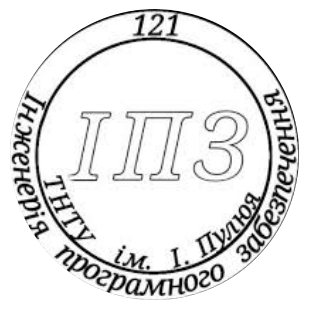

Особиста інформація
My bio
Юрчишина Вікторія Андріївна, студентка факультету ФІС в Тернопільському технічному університеті імені Івана Пулюя.
Детальніше>>
Вікторія Юрчишина — студентка 3-го курсу факультету інформаційних систем та технологій ТНТУ ім. Івана Пулюя. Народилася та виросла в Тернополі. З раннього дитинства цікавилася комп'ютерними технологіями, що згодом стало її професійним покликанням. Університет обрала завдяки своїй пристрасті до програмування та інженерії. Вікторія бере участь у різних конкурсах з програмування та активно займається самоосвітою, вивчаючи нові технології та підходи в розробці програмного забезпечення. У майбутньому Вікторія мріє працювати в міжнародній ІТ-компанії, де зможе реалізовувати великі проєкти та здобувати безцінний досвід. Вона також планує здобути додаткову освіту за кордоном, щоб розширити свої професійні горизонти. Її мета — створювати інноваційні продукти, що змінюють світ на краще, а також надихати інших молодих людей обирати кар’єру в сфері технологій.
My Group
Група СП-33 складається з 12 чоловік.
Детальніше>>
Група СП-33 — це команда амбітних студентів, яка активно бере участь у наукових заходах і проектах, зосереджуючись на розвитку навичок в інформаційних технологіях. Студенти працюють з передовими технологіями, що дозволяє їм бути конкурентоспроможними на ринку праці. Вони вчаться поєднувати теоретичні знання з практичним досвідом, що допомагає успішно проходити практику та отримувати робочі місця ще до закінчення навчання..
My Hobby
Hobby: Баскетбол
Детальніше>>
Баскетбол — це не просто хобі для неї, а справжня пристрасть. Протягом чотирьох років вона була капітаном баскетбольної команди, і цей досвід навчив її лідерства, командної роботи та стійкості. Кожен матч був можливістю продемонструвати свою відданість справі і підтримати команду. Для неї баскетбол — це більше ніж спорт, це культура взаємопідтримки та злагодженої роботи. Цей досвід став важливим етапом у її житті, який допоміг сформувати навички, що вона використовує і в інших сферах..
Hobby: Книги
Детальніше>>
Читання книг — це друге велике захоплення для Вікторії, яке дозволяє поринути в інші світи. Вона особливо любить детективи та хорори, де кожна сторінка сповнена напруження та інтригуючих поворотів. Вона насолоджується тим, як розгадує складні загадки разом з героями детективів або відчуває страшний атмосферний напругу в хорорах. Ці жанри дозволяють їй відчути нові емоції та випробувати цікаві виклики для розуму, що робить читання ще більш захоплюючим.
Hobby: Подорожі з друзями
Детальніше>>
Подорожі з друзями — це третє велике хобі для Вікторії, яке приносить багато радості та нових вражень. Вона обожнює подорожувати різними містами України, відкриваючи нові культури та традиції. Крім того, не менш важливе місце займають поїздки на природу, де можна насолоджуватися тишею та красою навколишнього світу, проводячи час з близькими людьми. Ці подорожі не тільки розширюють кругозір, а й дарують незабутні моменти, які залишаються в пам'яті на довго.
Something interesting
Interesting 1: Навчання за кордоном
Детальніше>>
Навчання за кордоном — це чудова можливість побачити світ, здобути міжнародний досвід та підвищити свій рівень англійської. Вікторія активно досліджує програми обміну студентами, зокрема Erasmus+, які дозволяють провести семестр у європейських університетах.
Interesting 2: Проєкти в IT
Детальніше>>

Окрім навчання, Вікторія бере участь у розробці власних ІТ-проєктів. Один із них — мобільний застосунок для управління завданнями, що допомагає студентам ефективно планувати свій час. Вона прагне створювати зручні сервіси, які полегшують повсякденне життя.
Interesting 3: Публічні виступи
Детальніше>>
Університет дає можливість розвивати не лише технічні навички, а й комунікаційні. Вікторія часто виступає на студентських конференціях, де ділиться досвідом участі в хакатонах і проєктних марафонах. Це допомагає їй розвивати впевненість у собі та навички публічних виступів.